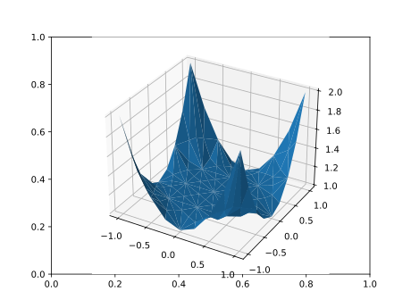

MultiGridBarrier 0.9.1
MultiGridBarrier is a Julia module for solving nonlinear convex optimization problems in function spaces, such as p-Laplace problems. When regularity conditions are satisfied, the solvers are quasi-optimal.
The MultiGridBarrier module features finite element and spectral discretizations in 1d and 2d.
Finite elements
After installing MultiGridBarrier with the Julia package manager, in a Jupyter notebook, one solves a 1d p-Laplace problem as follows:
using MultiGridBarrier
fem1d_solve(L=5,p=1.0,verbose=false);
A 2d p-Laplace problem:
fem2d_solve(L=3,p=1.0,verbose=false);
Spectral elements
Solve a 1d p-Laplace problem using spectral methods as follows:
spectral1d_solve(n=40,p=1.0,verbose=false);
A 2d p-Laplace problem:
spectral2d_solve(n=5,p=1.5,verbose=false);
Solving $\infty$-Laplacians
For $p \geq 1$ and domain $\Omega$, the solution $u$ of the $p$-Laplace problem is the minimizer of $J(u) = \|\nabla u\|_{L^p(\Omega)}^p + \int_{\Omega} fu,$ where $u$ is in a suitable space of function satisfying, e.g. Dirichlet conditions, and $f$ is a forcing. This definition must be modified for the $\infty$-Laplace problem. Here we show how to minimize: $J(u) = \|\nabla u\|_{L^\infty(\Omega)}^p + \int_{\Omega} fu.$ We put $p=1$ for simplicity.
fem1d_solve(L=5,p=1.0,state_variables=[:u :dirichlet; :s :uniform],verbose=false);
Parabolic problems
A time-dependent problem:
parabolic_solve(h=0.1,L=3,printer=anim->anim.save("parabolic.mp4"),verbose=false);Module reference
MultiGridBarrier.MultiGridBarrier — Modulemodule MultiGridBarrierModule MultiGridBarrier solves convex optimization problems in function spaces, for example, solving p-Laplace problems. We recommend to start with the functions fem1d_solve(), fem2d_solve(), spectral1d_solve(), spectral2d_solve(). These functions are sufficient to solve p-Laplace problems in 1d or 2d, using finite or spectral elements.
For more general use, the user will need to familiarize themselves with the basic ideas of convex optimization.
- Overview of convex optimization in function spaces by MultiGrid Barrier method.
The general idea is to build a multigrid hierarchy, represented by an AMG object, and barrier for a convex set, represented by a Barrier object, and then solve a convex optimization problem using the amgb() solver.
To generate the multigrid hierarchy represented by the AMG object, use either fem1d(), fem2d(), spectral1d() or spectral2d() functions. These constructors will assemble suitable AMG objects for either FEM or spectral discretizations, in 1d or 2d. One should think of these four constructors as being specialized in constructing some specific function spaces. A user can use the amg() constructor directly if custom function spaces are required, but this is more difficult.
We now describe the barrier function.
Assume that $\Omega \subset \mathbb{R}^d$ is some open set. Consider the example of the p-Laplace problem on $\Omega$. Let $f(x)$ be a "forcing" (a function) on $\Omega$, and $1 \leq p < \infty$. One wishes to solve the minimization problem
\[\begin{equation} \inf_u \int_{\Omega} fu + \|\nabla u\|_2^p \, dx. \tag{1} \end{equation}\]
Generally speaking, $u$ will range in some function space, e.g. a space of differentiable functions satisfying homogeneous Dirichlet conditions. Under some conditions, minimizing (1) is equivalent to solving the p-Laplace PDE:
\[\nabla \cdot (\|\nabla u\|_2^{p-2}\nabla u) = {1 \over p} f.\]
We introduce the "slack function" $s(x)$ and replace (1) with the following equivalent problem:
\[\begin{equation} \inf_{s(x) \geq \|\nabla u(x)\|_2^p} \int_{\Omega} fu + s \, dx. \tag{2} \end{equation}\]
Define the convex set $\mathcal{Q} = \{ (u(x),q(x),s(x)) \; : \; s(x) \geq \|q(x)\|_2^p \}$, and
\[z = \begin{bmatrix} u \\ s \end{bmatrix}, \qquad c^T = [f,0,1], \qquad Dz = \begin{bmatrix} u \\ \nabla u \\ s \end{bmatrix}.\]
Then, (2) can be rewritten as
\[\begin{equation} \inf_{Dz \in \mathcal{Q}} \int_{\Omega} c^T(x)Dz(x) \, dx. \tag{3} \end{equation}\]
Recall that a barrier for $\mathcal{Q}$ is a convex function $\mathcal{F}$ on $\mathcal{Q}$ such that $\mathcal{F} < \infty$ in the interior of $\mathcal{Q}$ and $\mathcal{F} = \infty$ on the boundary of $\mathcal{Q}$. A barrier for the p-Laplace problem is:
\[\mathcal{F}(u,q,s) = \int_{\Omega} -\log(s^{2 \over p} - \|q\|_2^2) - 2\log s \, dx = \int_{\Omega} F(Dz(x)) \, dx.\]
The central path $z^*(t)$ minimizes, for each fixed $t>0$, the quantity
\[\int_{\Omega} tc^TDz + F(Dz) \, dx.\]
As $t \to \infty$, $z^*(t)$ forms a minimizing sequence (or filter) for (3). We think of the function $c(x)$ as the "functional" that we seek to minimize.
The Convex{T} type describes various convex sets (denoted $Q$ above) by way of functions barrier(), cobarrier() and slack(). barrier is indeed a barrier for $Q$, cobarrier() is a barrier for a related feasibility problems, and slack() is used in solving the feasibility problem. Convex{T} objects can be created using the various convex_...() constructors, e.g. convex_Euclidian_power() for the p-Laplace problem.
Once one has AMG and Convex objects, and a suitable "functional" c, one uses the amgb() function to solve the optimization problem by the MultiGrid Barrier method, a variant of the barrier method (or interior point method) that is quasi-optimal for sufficiently regular problems.
Types reference
MultiGridBarrier.AMG — Type@kwdef struct AMG{T,M,Geometry}
...
endObjects of this type should probably be assembled by the constructor amg().
A multigrid with L levels. Denote by l between 1 and L, a grid level. Fields are:
x::Matrix{T}the vertices of the fine grid.w::Vector{T}corresponding quadrature weights.R_fine::Array{M,1}an array ofLmatrices. The columns ofR_fine[l]are basis functions for the function space on grid levell, interpolated to the fine grid.R_coarse::Array{M,1}an array ofLmatrices. The columns ofR_coarse[l]are basis functions for the function space on grid levell. UnlikeR_fine[l], these basis functions are on grid levell, not interpolated to the fine grid.D::Array{M,2}an array of differential operators. For example, if the barrier parameters are to beu,ux,s, withuxthe derivative ofu, thenD[l,:] = [I,Dx,I], whereDxis a numerical differentiation operator on grid levell.refine_u::Array{M,1}an array ofLgrid refinement matrices. Ifx[l]hasn[l]vertices, thenrefine_u[l]isn[l+1]byn[l].coarsen_u::Array{M,1}an array ofLgrid coarsening matrices.coarsen_u[l]isn[l]byn[l+1].refine_z::Array{M,1}an array ofLgrid refining matrices for the "state vector"z. For example, ifzcontains the state functionsuands, then there arek=2state functions, andrefine_z[l]isk*n[l+1]byk*n[l].coarsen_z::Array{M,1}an array ofLgrid coarsening matrices for the "state vector"z.coarsen_z[l]isk*n[l]byk*n[l+1].
These various matrices must satisfy a wide variety of algebraic relations. For this reason, it is recommended to use the constructor amg().
MultiGridBarrier.Barrier — TypeBarrierA type for holding barrier functions. Fields are:
f0::Function
f1::Function
f2::Functionf0 is the barrier function itself, while f1 is its gradient and f2 is the Hessian.
MultiGridBarrier.Convex — Typestruct Convex
barrier::Function
cobarrier::Function
slack::Function
endThe Convex data structure represents a convex domain $Q$ implicitly by way of three functions. The barrier function is a barrier for $Q$. cobarrier is a barrier for the feasibility subproblem, and slack is a function that initializes a valid slack value for the feasibility subproblem. The various convex_ functions can be used to generate various convex domains.
These functions are called as follows: barrier(x,y). x is a vertex in a grid, as per the AMG object. y is some vector. For each fixed x variable, y -> barrier(x,y) defines a barrier for a convex set in y.
MultiGridBarrier.FEM1D — Typeabstract type FEM1D endMultiGridBarrier.FEM2D — Typeabstract type FEM2D endMultiGridBarrier.SPECTRAL1D — Typeabstract type SPECTRAL1D endMultiGridBarrier.SPECTRAL2D — Typeabstract type SPECTRAL2D endFunctions reference
Base.intersect — MethodBase.intersect(U::Convex{T}, rest...) where {T}Intersection of arbitrarily many convex domains.
Returns a Convex{T} that enforces all given domains at each x. Internally this is implemented via convex_piecewise with select(x) = [true, true, ...], so that:
barrier(x, y) = U.barrier(x, y) + ∑ rest[k].barrier(x, y)cobarrier(x, yhat) = U.cobarrier(x, yhat) + ∑ rest[k].cobarrier(x, yhat)slack(x, y) = max(U.slack(x, y), max(rest[k].slack(x, y) for k))
This lets you compose constraints in a natural way: the resulting domain equals U ∩ V₁ ∩ V₂ ∩ ....
Examples
# Intersect two domains
U = convex_Euclidian_power(Float64; idx=[1, 2+dim], p = x->2)
V = convex_Euclidian_power(Float64; idx=vcat(2:1+dim, 3+dim), p = x->p)
Q = U ∩ V # same as intersect(U, V)
# Intersect three or more domains
W = convex_linear(Float64; A = x->A_matrix, b = x->b_vector)
Q3 = U ∩ V ∩ W # same as intersect(U, V, W)
# Works with single domain (returns it unchanged)
Q1 = intersect(U) # effectively returns USee also: convex_piecewise.
MultiGridBarrier.amg — Methodfunction amg(::Type{Geometry};
x::Matrix{T},
w::Vector{T},
state_variables::Matrix{Symbol},
D::Matrix{Symbol},
subspaces::Dict{Symbol,Vector{M}},
operators::Dict{Symbol,M},
refine::Vector{M},
coarsen::Vector{M},
full_space=:full,
id_operator=:id,
feasibility_slack=:feasibility_slack,
generate_feasibility=true) where {T,M,Geometry}Construct an AMG object for use with the amgb solver. In many cases, this constructor is not called directly by the user. For 1d and 2d finite elements, use the fem1d() or fem2d(). For 1d and 2d spectral elements, use spectral1d() or spectral2d(). You use amg() directly if you are implementing your own function spaces.
The AMG object shall represent all L grid levels of the multigrid hierarchy. Parameters are:
x: the vertices of the fine grid.w: the quadrature weights for the fine grid.state_variables: a matrix of symbols. The first column indicates the names of the state vectors or functions, and the second column indicates the names of the corresponding subspaces. A typical example is:state_variables = [:u :dirichlet; :s :full]. This would define the solution as being functions named u(x) and s(x). The u function would lie in the space:dirichlet, presumably consisting of functions with homogeneous Dirichlet conditions. The s function would lie in the space:full, presumably being the full function space, without boundary conditions.D: a matrix of symbols. The first column indicates the names of various state variables, and the second column indicates the corresponding differentiation operator(s). For example:D = [:u :id ; :u :dx ; :s :id]. This would indicate that the barrier should be called asF(x,y)withy = [u,ux,s], whereuxdenotes the derivative ofuwith respect to the space variablex.subspaces: aDictmapping each subspace symbol to an array ofLmatrices, e.g. for eachl,subspaces[:dirichlet][l]is a matrix whose columns span the homogeneous Dirichlet subspace of grid levell.operators: aDictmapping each differential operator symbol to a matrix, e.g.operators[:id]is an identity matrix, whileoperators[:dx]is a numerical differentiation matrix, on the fine grid levelL.refine: an array of lengthLof matrices. For eachl,refine[l]interpolates from grid levellto grid levell+1.refine[L]should be the identity, andcoarsen[l]*refine[l]should be the identity.coarsen: an array of lengthLof matrices. For eachl,coarsen[l]interpolates or projects from grid levell+1to grid levell.coarsen[L]should be the identity.generate_feasibility: if true,amg()returns a pairMofAMGobjects.M[1]is anAMGobject to be used for the main optimization problem, whileM[2]is anAMGobject for the preliminary feasibility sub problem. In this case,amg()also needs to be provided with the following additional information:feasibility_slackis the name of a special slack variable that must be unique to the feasibility subproblem (default::feasibility_slack);full_spaceis the name of the "full" vector space (i.e. no boundary conditions, default::full); andid_operatoris the name of the identity operator (default::id).
MultiGridBarrier.amg_construct — Methodamg_construct(::Type{T},::Type{FEM1D};rest...) where {T} = fem1d(T;rest...)MultiGridBarrier.amg_construct — Methodamg_construct(::Type{T},::Type{FEM2D};rest...) where {T} = fem2d(T;rest...)MultiGridBarrier.amg_construct — Methodamg_construct(::Type{T},::Type{SPECTRAL1D};rest...) where {T} = spectral1d(T;rest...)MultiGridBarrier.amg_construct — Methodamg_construct(::Type{T},::Type{SPECTRAL2D};rest...) where {T} = spectral2d(T;rest...)MultiGridBarrier.amg_dim — Methodamg_dim(::Type{FEM1D}) = 1MultiGridBarrier.amg_dim — Methodamg_dim(::Type{FEM2D}) = 2MultiGridBarrier.amg_dim — Methodamg_dim(::Type{SPECTRAL1D}) = 1MultiGridBarrier.amg_dim — Methodamg_dim(::Type{SPECTRAL2D}) = 2MultiGridBarrier.amg_plot — Methodamg_plot(M::AMG{T,Mat,FEM1D}, z::Vector{T}) where {T,Mat} = plot(M.x,z)MultiGridBarrier.amg_plot — Methodamg_plot(M::AMG{T, Mat,FEM2D}, z::Array{T}) where {T,Mat}Plot a piecewise quadratic (plus cubic "bubble") solution z on the given mesh. Note that the solution is drawn as (linear) triangles, even though the underlying solution is piecewise cubic. To obtain a more accurate depiction, especially when the mesh is coarse, it would be preferable to apply a few levels of additional subdivision, so as to capture the curve of the quadratic basis functions.
MultiGridBarrier.amg_plot — Methodamg_plot(M::AMG{T,Mat,SPECTRAL1D},y;x=Array(-1:T(0.01):1),rest...) where {T,Mat}Plot a solution using pyplot.
M: a mesh.x: x values where the solution should be evaluated and plotted.y: the solution, to be interpolated at the givenxvalues viaspectral1d_interp.rest...parameters are passed directly topyplot.plot.
MultiGridBarrier.amg_plot — Methodamg_plot(M::AMG{T,Mat,SPECTRAL2D},z::Array{T,1};x=-1:T(0.01):1,y=-1:T(0.01):1,rest...) where {T,Mat}Plot a 2d solution.
Ma 2d mesh.x,yshould be ranges like -1:0.01:1.zthe solution to plot.
MultiGridBarrier.amgb — Methodamgb([::Type{T}=Float64]; kwargs...) where {T}Algebraic MultiGrid Barrier (AMGB) solver for nonlinear convex optimization problems in function spaces using multigrid barrier methods.
This is the main high-level entry point for solving p-Laplace and related problems using the barrier method with multigrid acceleration. The solver operates in two phases:
- Feasibility phase: Finds an interior point for the constraint set (if needed)
- Main optimization phase: Solves the barrier-augmented optimization problem
Arguments
T::Type = Float64: Numeric type for computations
Keyword Arguments
Discretization Parameters
L::Integer = 2: Number of mesh refinement levels (grid has 2^L subdivisions)n::Union{Nothing,Integer} = nothing: Number of quadrature nodes per axis (spectral methods only; overridesL)method = FEM1D: Discretization method. Options:FEM1D,FEM2D,SPECTRAL1D,SPECTRAL2DK::Union{Nothing,Matrix} = nothing: Initial triangular mesh forFEM2D(3n×2 matrix for n triangles)x::Matrix{T} = M[1].x: Mesh/sample points wherefandgare evaluated when they are functions
Problem Specification
state_variables::Matrix{Symbol} = [:u :dirichlet; :s :full]: Solution components and their function spacesD::Matrix{Symbol} = default_D[dim]: Differential operators to apply to state variablesp::T = 1.0: Exponent for p-Laplace operator (p ≥ 1)g::Union{Function,Matrix{T}}: Boundary conditions/initial guess (function of spatial coordinates or matrix)f::Union{Function,Matrix{T}}: Forcing term/cost functional (function of spatial coordinates or matrix)Q::Convex{T} = convex_Euclidian_power(...): Convex constraint set for the variational problem
Solver Control - Basic
M: Pre-built AMG hierarchy (constructed automatically if not provided)verbose::Bool = true: Display progress bar during solvinglogfile = devnull: IO stream for logging (default: no file logging)
Solver Control - Barrier Method (passed to amgb_core)
tol = sqrt(eps(T)): Stopping tolerance; the method stops once1/t < tolwheretis the barrier parametert = T(0.1): Initial barrier parameter for the main solvet_feasibility = t: Initial barrier parameter for the feasibility solvemaxit = 10000: Maximum number of barrier iterationskappa = T(10.0): Initial step size multiplier for barrier parametert. Adapted dynamically but never exceeds this initial valuec0 = T(0): Base offset added to the objective (c0 + t*c)early_stop = z->false: Functionz -> Bool; iftrue, the iteration halts early (e.g., to stop feasibility phase when interior point found)
Solver Control - Newton Method (passed to amgbdriver/amgbcore)
max_newton = ceil((log2(-log2(eps(T))))+2): Maximum Newton iterations per inner solvestopping_criterion = stopping_inexact(sqrt(minimum(M[1].w))/2, T(0.5)): Stopping criterion for Newton solver. Options:stopping_exact(tol): Check if objective decreased and gradient norm fell below tolerancestopping_inexact(h, theta): Inexact Newton with mesh-dependent tolerance
line_search = linesearch_backtracking(T): Line search strategy. Options:linesearch_backtracking(T): Backtracking line search (default)linesearch_illinois(T): Illinois algorithm-based line search
finalize = stopping_exact(T(0.5)): Finalization stopping criterion for the last Newton solve (stricter convergence)
Output Control
show::Bool = true: Plot the computed solution using PyPlot (requires PyPlot.jl)return_details::Bool = false:false: Return only the solution matrixztrue: Return full solution object with detailed solver information
Additional Parameters
dim::Integer = amg_dim(method): Problem dimension (1 or 2), auto-detected from methodrest...: Additional keyword arguments passed to amgbdriver and amgbcore
Default Values
The defaults for f, g, and D depend on the problem dimension:
1D Problems
f(x) = [0.5, 0.0, 1.0]- Forcing termg(x) = [x[1], 2]- Boundary conditionsD = [:u :id; :u :dx; :s :id]- Identity, derivative, identity
2D Problems
f(x) = [0.5, 0.0, 0.0, 1.0]- Forcing termg(x) = [x[1]²+x[2]², 100.0]- Boundary conditionsD = [:u :id; :u :dx; :u :dy; :s :id]- Identity, x-derivative, y-derivative, identity
Returns
If
return_details=false(default): Matrix of size(n_nodes, n_components)containing the solutionIf
return_details=true: NamedTuple with fields:z: Solution matrix of size(n_nodes, n_components)containing the computed solutionSOL_feasibility: Feasibility phase results (nothingif initial point was already feasible), otherwise a solution object (see below)SOL_main: Main optimization phase results as a solution object (see below)log: String containing detailed iteration log for debugging
Each solution object (
SOL_feasibilityandSOL_main) is a NamedTuple containing:z: Solution vector (flattened; for feasibility phase includes auxiliary slack variable)z_unfinalized: Solution before final refinement stepc: Cost functional used in this phaseits: Iteration counts across levels and barrier steps (L×k matrix where L is number of levels, k is number of barrier iterations)ts: Sequence of barrier parameters t used (length k)kappas: Step size multipliers used at each iteration (length k)times: Wall-clock timestamps for each iteration (length k)M: The AMG hierarchy used (M[2] for feasibility, M[1] for main)t_begin,t_end,t_elapsed: Timing information for this phasepassed: Boolean array indicating phase 1 success at each levelc_dot_Dz: Values of ⟨c, D*z⟩ at each barrier iteration (length k)
Algorithm Overview
The AMGB method combines:
- Interior point method: Uses logarithmic barriers to handle constraints
- Multigrid acceleration: Solves on hierarchy of grids from coarse to fine
- Damped Newton iteration: Inner solver with line search for robustness
The solver automatically handles:
- Construction of appropriate discretization and multigrid hierarchy
- Feasibility restoration when initial point is infeasible
- Adaptive barrier parameter updates with step size control
- Convergence monitoring across multiple grid levels
- Progress reporting (when
verbose=true) and logging (tologfileif specified)
Errors
Throws AMGBConvergenceFailure if:
- The feasibility problem cannot be solved (problem may be infeasible)
- The main optimization fails to converge within
maxititerations - Newton iteration fails at any grid level
Examples
# Solve 1D p-Laplace problem with p=1.5
z = amgb(Float64; L=4, p=1.5, method=FEM1D)
# Solve 2D problem with custom boundary conditions
g_custom(x) = [sin(π*x[1])*sin(π*x[2]), 10.0]
z = amgb(Float64; L=3, method=FEM2D, g=g_custom)
# Get detailed solution information
sol = amgb(Float64; L=3, return_details=true, verbose=true)
println("Iterations: ", sum(sol.SOL_main.its))
println("Final barrier parameter: ", sol.SOL_main.ts[end])
# Log iterations to a file
open("solver.log", "w") do io
amgb(Float64; L=3, logfile=io, verbose=false)
endSee Also
fem1d_solve,fem2d_solve,spectral1d_solve,spectral2d_solve: Convenience wrappers for specific discretizationsamg: AMG hierarchy construction for custom discretizationsbarrier,Convex: Barrier function and constraint set specifications
MultiGridBarrier.apply_D — Methodapply_D(D,z::Vector{T}) where {T} = hcat([D[k]*z for k in 1:length(D)]...)MultiGridBarrier.barrier — Methodfunction barrier(F;
F1=(x,y)->ForwardDiff.gradient(z->F(x,z),y),
F2=(x,y)->ForwardDiff.hessian(z->F(x,z),y))Constructor for barriers.
Fis the actual barrier function. It should take parameters(x,y).F1is the gradient ofFwith respect toy.F2is the Hessian ofFwith respect toy.
By default, F1 and F2 are automatically generated by the module ForwardDiff.
A more specific description of the Barrier object is as follows. The function Barrier.f0 has parameters:
function Barrier.f0(z,x,w,c,R,D,z0)Here, R is a matrix and D is an array of matrices; x is a matrix of quadrature nodes with weights w, and c is a matrix describing the functional we seek to minimize. The value of Barrier.f0 is given by:
p = length(w)
n = length(D)
Rz = z0+R*z
Dz = hcat([D[k]*Rz for k=1:n]...)
y = [F(x[k,:],Dz[k,:]) for k=1:p]
dot(w,y)+sum([dot(w.*c[:,k],Dz[:,k]) for k=1:n])Thus, Barrier.f0 can be regarded as a quadrature approximation of the integral
\[\int_{\Omega} \left(\sum_{k=1}^nc_k(x)v_k(x)\right) + F(x,v_1(x),\ldots,v_n(x)) \, dx \text{ where } v_k = D_k(z_0 + Rz).\]
Functions Barrier.f1 and Barrier.f2 are the gradient and Hessian, respectively, of Barrier.f0, with respect to the z parameter. If the underlying matrices are sparse, then sparse arithmetic is used for Barrier.f2.
MultiGridBarrier.convex_Euclidian_power — Methodfunction convex_Euclidian_power(::Type{T}=Float64;idx=Colon(),A::Function=(x)->I,b::Function=(x)->T(0),p::Function=x->T(2)) where {T}Generate a Convex object corresponding to the convex set defined by $z[end] \geq \|z[1:end-1]\|_2^p$ where $z = A(x)*y[idx] .+ b(x)$.
MultiGridBarrier.convex_linear — Methodfunction convex_linear(::Type{T}=Float64;idx=Colon(),A::Function=(x)->I,b::Function=(x)->T(0)) where {T}Generate a Convex structure corresponding to the convex domain A(x,k)*y[idx] .+ b(x,k) ≤ 0.
MultiGridBarrier.convex_piecewise — Methodconvex_piecewise(::Type{T}=Float64; Q::Vector{Convex{T}}, select::Function=(tr=fill(true,length(Q));x->tr)) where {T}Build a Convex{T} that combines multiple convex domains with spatial selectivity.
Arguments
Q::Vector{Convex{T}}: a vector of convex pieces to be combined.select::Function: a functionx -> Vector{Bool}indicating which pieces are active atx. Default: all pieces active everywhere (equivalent to intersection).
Semantics
For sel = select(x), the resulting convex domain has:
barrier(x, y) = ∑(Q[k].barrier(x, y) for k where sel[k])cobarrier(x, yhat) = ∑(Q[k].cobarrier(x, yhat) for k where sel[k])slack(x, y) = max(Q[k].slack(x, y) for k where sel[k])
The slack is the maximum over active pieces, ensuring a single slack value suffices for feasibility at each x.
Use cases
- Intersections (default): All pieces active everywhere creates
Q₁ ∩ Q₂ ∩ ... - Spatial switching: Different constraints in different regions
- Conditional constraints: Activate constraints based on solution state
Examples
# Intersection (using default select)
U = convex_Euclidian_power(Float64; idx=[1, 3], p = x->2)
V = convex_linear(Float64; A = x->A_matrix, b = x->b_vector)
Qint = convex_piecewise(Float64; Q = [U, V]) # U ∩ V everywhere
# Region-dependent constraints
Q_left = convex_Euclidian_power(Float64; p = x->1.5)
Q_right = convex_Euclidian_power(Float64; p = x->2.0)
select(x) = [x[1] < 0, x[1] >= 0] # left half vs right half
Qreg = convex_piecewise(Float64; Q = [Q_left, Q_right], select = select)
# Conditional activation
Q_base = convex_linear(Float64; A = x->I, b = x->-ones(2))
Q_extra = convex_Euclidian_power(Float64; p = x->3)
select(x) = [true, norm(x) > 0.5] # extra constraint outside radius 0.5
Qcond = convex_piecewise(Float64; Q = [Q_base, Q_extra], select = select)See also: Base.intersect, convex_linear, convex_Euclidian_power.
MultiGridBarrier.fem1d — Methodfem1d(::Type{T}=Float64; L::Int=4, n=nothing, K=nothing,
state_variables = [:u :dirichlet
:s :full],
D = [:u :id
:u :dx
:s :id],
generate_feasibility=true) where {T}Construct an AMG object for a 1d piecewise linear finite element grid. The interval is [-1,1]. Parameters are:
L: divide the interval into 2^L subintervals (L for Levels).state_variables: the "state vector" consists of functions, by default this isu(x)ands(x), on the finite element grid.D: the set of differential operators. The barrier functionFwill eventually be called with the parametersF(x,Dz), wherezis the state vector. By default, this results inF(x,u,ux,s), whereuxis the derivative ofu.generate_feasibility: iftrue, returns a pairMofAMGobjects.M[1]is theAMGobject for the main problem, andM[2]is for the feasibility subproblem.
MultiGridBarrier.fem1d_interp — Methodfem1d_interp(x::Vector{T},
y::Vector{T},
t::T) where{T}Interpolate a 1d piecewise linear function at the given t value. If u(xi) is the piecewise linear function such that u(x[k])=y[k] then this function returns u(t).
MultiGridBarrier.fem1d_interp — Methodfem1d_interp(x::Vector{T},
y::Vector{T},
t::Vector{T}) where{T}Returns [fem1d_interp(x,y,t[k]) for k=1:length(t)].
MultiGridBarrier.fem1d_solve — Methodfem1d_solve(::Type{T}=Float64;rest...) where {T} = amg_solve(T;method=FEM1D,rest...)MultiGridBarrier.fem2d — Methodfem2d(::Type{T}=Float64; L::Int=2, n=nothing,
K=T[-1 -1;1 -1;-1 1;1 -1;1 1;-1 1],
state_variables = [:u :dirichlet
:s :full],
D = [:u :id
:u :dx
:u :dy
:s :id],
generate_feasibility=true) where {T}Construct an AMG object for a 2d finite element grid on the domain K with piecewise quadratic elements. Parameters are:
K: a triangular mesh. If there arentriangles, thenKshould be a 3n by 2 matrix of vertices. The first column ofKrepresentsxcoordinates, the second column representsycoordinates.L: number of refinement levels (L for Levels).state_variables: the "state vector" consists of functions, by default this isu(x)ands(x), on the finite element grid.D: the set of differential operators. The barrier functionFwill eventually be called with the parametersF(x,y,Dz), wherezis the state vector. By default, this results inF(x,y,u,ux,uy,s), where(ux,uy)is the gradient ofu.generate_feasibility: iftrue, returns a pairMofAMGobjects.M[1]is theAMGobject for the main problem, andM[2]is for the feasibility subproblem.
MultiGridBarrier.fem2d_solve — Methodfem2d_solve(::Type{T}=Float64;rest...) where {T} = amgb_solve(T;method=FEM2D,rest...)MultiGridBarrier.illinois — Methodillinois(f,a::T,b::T;fa=f(a),fb=f(b),maxit=10000) where {T}Find a root of f between a and b using the Illinois algorithm. If f(a)*f(b)>=0, returns b.
MultiGridBarrier.parabolic_plot — Methodparabolic_plot(method,M::AMG{T, Mat,Geometry}, U::Matrix{T};
interval=200, embed_limit=200.0,
printer=(animation)->display("text/html", animation.to_html5_video(embed_limit=embed_limit))) where {T,Mat,Geometry}Animate the solution of the parabolic problem.
MultiGridBarrier.parabolic_solve — Methodparabolic_solve(::Type{T}=Float64;
method = FEM2D,
state_variables = [:u :dirichlet
:s1 :full
:s2 :full],
dim = amg_dim(method),
f1 = x->T(0.5),
f_default = default_f_parabolic[dim],
p = T(1),
h = T(0.2),
f = (t,x)->f_default(h*f1(x)-x[1+dim],T(0.5),h/p),
g = default_g_parabolic[dim],
D = default_D_parabolic[dim],
L = 2,
t0 = T(0),
t1 = T(1),
M = amg_construct(T,method,L=L,D=D,state_variables=state_variables),
Q = (convex_Euclidian_power(;idx=[1,2+dim],p=x->T(2))
∩ convex_Euclidian_power(;idx=vcat(2:1+dim,3+dim),p=x->p)),
verbose = true,
show = true,
interval = 200,
printer=(animation)->display("text/html", animation.to_html5_video(embed_limit=200.0)),
rest...) where {T}Solves a parabolic (i.e. time-dependent) p-Laplace problem of the form:
\[u_t - \nabla \cdot (\|\nabla u\|_2^{p-2}\nabla u) = -f_1.\]
We use the implicit Euler scheme $u_t \approx (u_{k+1}-u_k)/h$ to arrive at:
\[u_{k+1} - h\nabla \cdot (\|\nabla u_{k+1}\|_2^{p-2}\nabla u_{k+1}) = u_k-hf_1.\]
According to the calculus of variation, we look for a weak solution minimizing
\[J(u) = \int_{\Omega}{1 \over 2} u^2 + h {1 \over p} \|\nabla u\|_2^p + (hf_1-u_k)u \, dx\]
We introduce the slack functions $s_1 \geq u^2$ and $s_2 \geq \|\nabla u\|_2^p$ and minimize instead
\[\int_{\Omega} {1 \over 2}s_1 + {h \over p} s_2 + (hf_1-u_k)u \, dx.\]
The canonical form is:
\[z = \begin{bmatrix} u \\ s_1 \\ s_2 \end{bmatrix} \qquad f^T = \left[hf_1-u_k,0,0,{1 \over 2},{h \over p}\right] \qquad Dz = \begin{bmatrix} u \\ u_x \\ u_y \\ s_1 \\ s_2 \end{bmatrix} \qquad g = \begin{bmatrix} g_1 \\ 0 \\ 0 \end{bmatrix}.\]
Here, $g_1$ encodes boundary conditions for $u$. Then we minimize:
\[\int_{\Omega} f^TDz\]
The named arguments rest... are passed verbatim to amg_solve.
MultiGridBarrier.spectral1d — Methodspectral1d(::Type{T}=Float64; n=nothing, L::Integer=2,
K=nothing,
state_variables = [:u :dirichlet
:s :full],
D = [:u :id
:u :dx
:s :id],
generate_feasibility=true) where {T}Construct an AMG object for a 1d spectral grid of polynomials of degree n-1. See also fem1d for a description of the parameters state_variables and D.
MultiGridBarrier.spectral1d_interp — Methodspectral1d_interp(MM::AMG{T,Mat,SPECTRAL1D}, y::Array{T,1},x) where {T,Mat}A function to interpolate a solution y at some point(s) x.
MMthe mesh of the solution.ythe solution.xpoint(s) at which the solution should be evaluated.
MultiGridBarrier.spectral1d_solve — Methodspectral1d_solve(::Type{T}=Float64;rest...) where {T} = amgb_solve(T;method=SPECTRAL1D,rest...)MultiGridBarrier.spectral2d — Methodspectral2d(::Type{T}=Float64; n=nothing,
L::Integer=2,
K=nothing,
state_variables = [:u :dirichlet
:s :full],
D = [:u :id
:u :dx
:u :dy
:s :id],
generate_feasibility=true) where {T}Construct an AMG object for a 2d spectral grid of degree n-1. See also fem2d for a description of state_variables and D.
MultiGridBarrier.spectral2d_interp — Methodspectral2d_interp(MM::AMG{T,Mat,SPECTRAL2D},z::Array{T,1},x::Array{T,2}) where {T,Mat}Interpolate a solution z at point(s) x, given the mesh MM. See also spectral1d_interp.
MultiGridBarrier.spectral2d_solve — Methodspectral2d_solve(::Type{T}=Float64;rest...) where {T} = amgb_solve(T;method=SPECTRAL2D,rest...)MultiGridBarrier.stopping_exact — Methodstopping_exact(theta::T) where {T}Create an exact stopping criterion for Newton methods.
Arguments
theta: tolerance parameter for gradient norm relative decrease (type T).
Returns
A stopping criterion function with signature: stop(ymin, ynext, gmin, gnext, n, ndecmin, ndec) -> Bool
where:
ymin: minimum objective value seen so far.ynext: current objective value.gmin: minimum gradient norm seen so far.gnext: current gradient vector.n: current Newton direction.ndecmin: square root of minimum Newton decrement seen so far.ndec: square root of current Newton decrement.
Algorithm
Returns true (stop) if both conditions hold:
- No objective improvement:
ynext ≥ ymin - Gradient norm stagnation:
‖gnext‖ ≥ theta * gmin
Notes
This criterion is "exact" in the sense that it requires both objective and gradient stagnation before stopping, making it suitable for high-precision optimization. Typical values of theta are in the range [0.1, 0.9].
MultiGridBarrier.stopping_inexact — Methodstopping_inexact(lambda_tol::T, theta::T) where {T}Create an inexact stopping criterion for Newton methods that combines Newton decrement and exact stopping conditions.
Arguments
lambda_tol: tolerance for the Newton decrement (type T).theta: tolerance parameter for the exact stopping criterion (type T).
Returns
A stopping criterion function with signature: stop(ymin, ynext, gmin, gnext, n, ndecmin, ndec) -> Bool
where:
ymin: minimum objective value seen so far.ynext: current objective value.gmin: minimum gradient norm seen so far.gnext: current gradient vector.n: current Newton direction.ndecmin: square root of minimum Newton decrement seen so far.ndec: square root of current Newton decrement (√(gᵀH⁻¹g)).
Algorithm
Returns true (stop) if either condition holds:
- Newton decrement condition:
ndec < lambda_tol - Exact stopping condition:
stopping_exact(theta)is satisfied
Notes
This criterion is "inexact" because it allows early termination based on the Newton decrement, which provides a quadratic convergence estimate. The Newton decrement λ = √(gᵀH⁻¹g) approximates the distance to the optimum in the Newton metric. Typical values: lambda_tol ∈ [1e-6, 1e-3], theta ∈ [0.1, 0.9].
Index
MultiGridBarrier.MultiGridBarrierMultiGridBarrier.AMGMultiGridBarrier.BarrierMultiGridBarrier.ConvexMultiGridBarrier.FEM1DMultiGridBarrier.FEM2DMultiGridBarrier.SPECTRAL1DMultiGridBarrier.SPECTRAL2DBase.intersectMultiGridBarrier.amgMultiGridBarrier.amg_constructMultiGridBarrier.amg_constructMultiGridBarrier.amg_constructMultiGridBarrier.amg_constructMultiGridBarrier.amg_dimMultiGridBarrier.amg_dimMultiGridBarrier.amg_dimMultiGridBarrier.amg_dimMultiGridBarrier.amg_plotMultiGridBarrier.amg_plotMultiGridBarrier.amg_plotMultiGridBarrier.amg_plotMultiGridBarrier.amgbMultiGridBarrier.apply_DMultiGridBarrier.barrierMultiGridBarrier.convex_Euclidian_powerMultiGridBarrier.convex_linearMultiGridBarrier.convex_piecewiseMultiGridBarrier.fem1dMultiGridBarrier.fem1d_interpMultiGridBarrier.fem1d_interpMultiGridBarrier.fem1d_solveMultiGridBarrier.fem2dMultiGridBarrier.fem2d_solveMultiGridBarrier.illinoisMultiGridBarrier.parabolic_plotMultiGridBarrier.parabolic_solveMultiGridBarrier.spectral1dMultiGridBarrier.spectral1d_interpMultiGridBarrier.spectral1d_solveMultiGridBarrier.spectral2dMultiGridBarrier.spectral2d_interpMultiGridBarrier.spectral2d_solveMultiGridBarrier.stopping_exactMultiGridBarrier.stopping_inexact